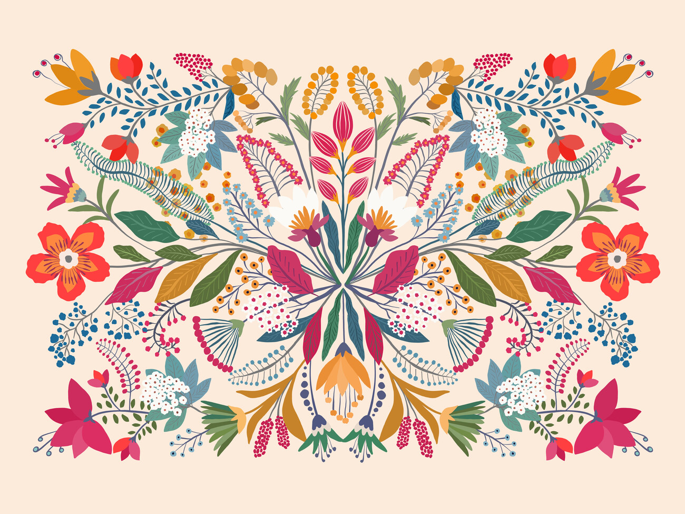

The World of Mexican Art
Welcome to this website focused on Mexican art. Here, you'll find a collection of artworks that reflect Mexico's rich cultural history, from ancient Aztec sculptures to modern-day creations. Explore traditional folk art, religious imagery, and the works of renowned artists. This site's objective is to offer insights into the various styles and influences shaping Mexican art today.
